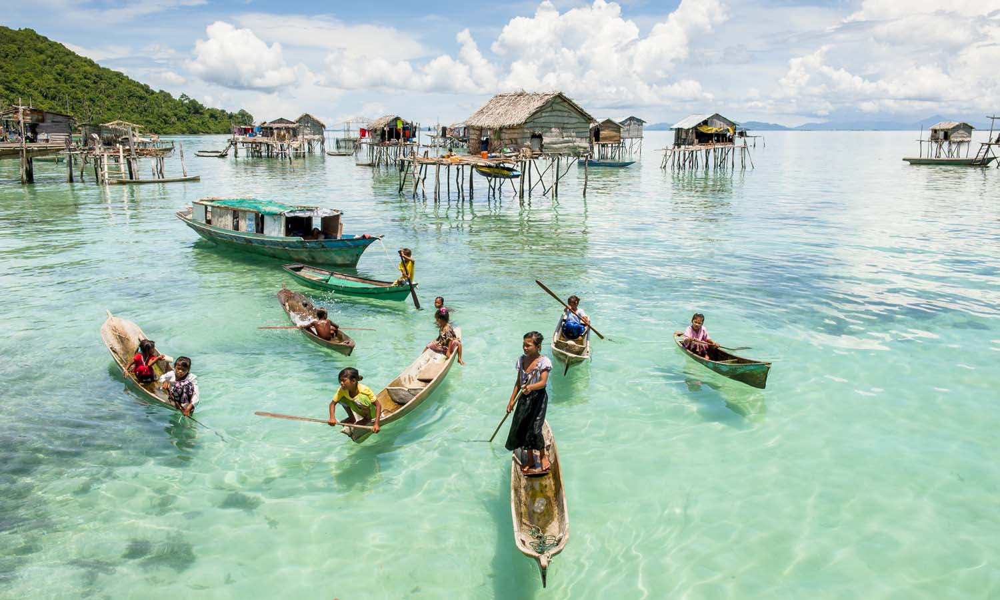
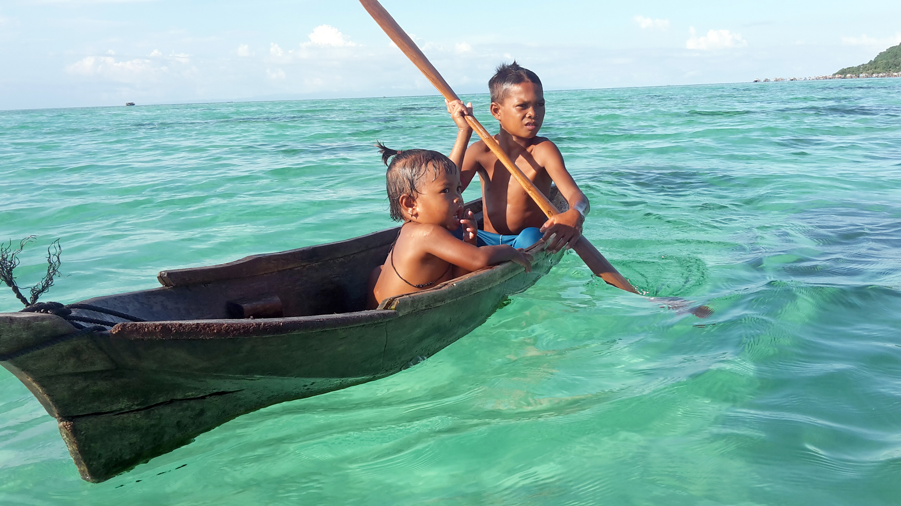
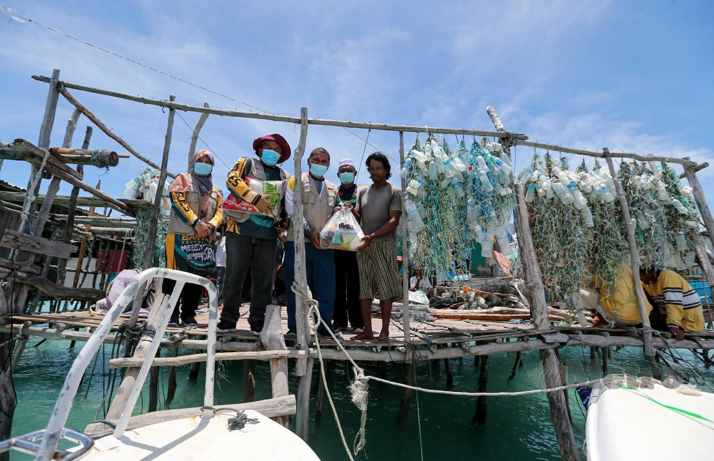
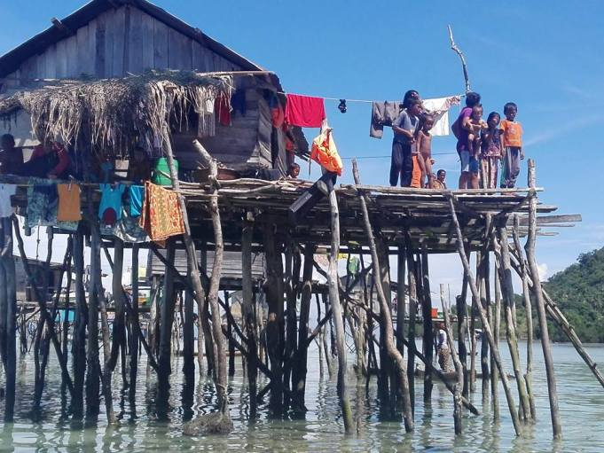
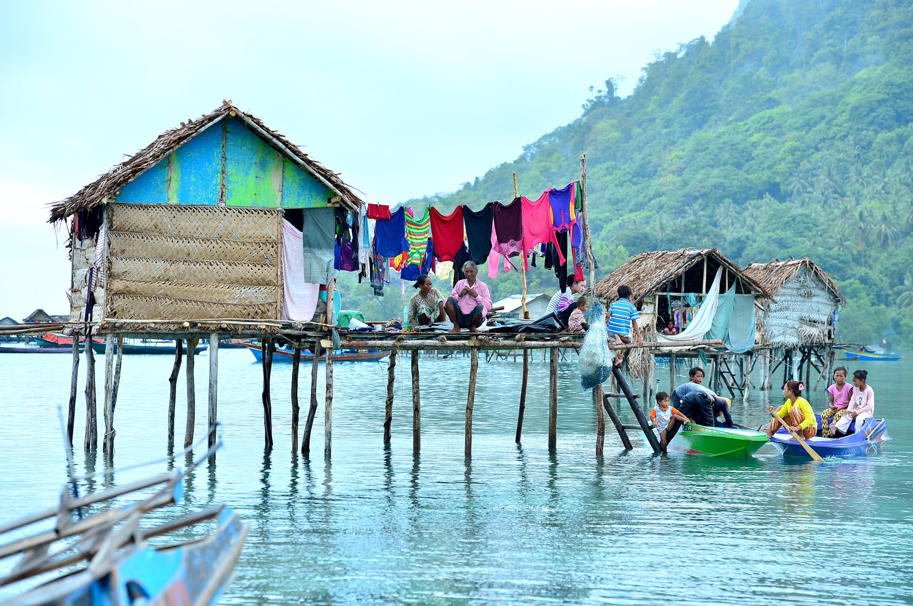

NEWS The story of the Bajau Laut family being left without citizenship - by MalaysiaKiniAs early as the 15th century, the Bajau Laut had moved freely in the Sulu Zone - the area around the Sulu Sea and the Sulawesi Sea - until there was the concept of nation -state borders. Yet until now there are a handful of them still choosing to live life at sea. Often referred to as 'sea fishermen' or Sama Dilaut, a group of Sama -Bajau - face the difficulty of living life at sea with limited resources. And this includes Unggun, who lived in a traditional Bajau Laut boat in Semporna waters for most of his life - after fleeing Tawi -Tawi at a young age. |
|---|
| 
Without electricity, he and his family seem to be marginalized from many aspects of modern life. Not only did they not know about the change of government on May 9 last year, they were even unsure of their own date of birth. However, Unggun does not see education as a way to improve the lives of his community. “I don’t think so,” he said when asked if school on the boat could help. "Other Sea Bajau people can go to school, but we don't." While education is very important for the new generation of Bajau Laut to adapt to modern life, Unggun believes the only skill worth learning is fishing. That knowledge is what he inherited to his four sons. |
MRA helps the east coast community of Sabah - by Berita Harian OnlineKUALA LUMPUR: The Malaysia Relief Agency (MRA) visited the east coast of Sabah recently to raise awareness on education and health. The program from September 26 to September 30, was attended by 18 MRA Friends from Kedah and Sabah, comprising medical doctors and volunteers. MRA President, Dr Mohd Daud Sulaiman, said his party provided health treatment services, circumcision for free as well as donated books and prayer equipment to residents in several areas. He said, among the areas visited were Pulau Omadal, Kampung Gusung Melanta, Pulau Bum-Bum, Pulau Mabul and in Kampung Kunak 3.  "This program has received a very good response from the east coast community of Sabah in general and the Bajau Laut community in particular. "I hope that more corporate bodies, government agencies, non -governmental organizations (NGOs) and individuals work together to make a success of volunteer and humanitarian programs or activities in Sabah in the future. "People especially the younger generation are also encouraged to join Sahabat or the MRA volunteer wing," he said in a statement, today. The four -day mission was led by Sabah MRA Coordinator Alex Dennis and Kedah MRA Chairman Dr Mohd Saifullah Alhany Abdul Halim. Mabul Island 'misses' tourists - by MetroSemporna: Just mentioning Mabul Island, you can imagine the clarity of the water and the beauty of the beach that will amaze local and foreign tourists. Located on the east coast of Sabah near Semporna, the island is known as a 'must -visit' island by diving enthusiasts. The writer had a chance to experience the beauty of the island which took 45 minutes to travel from Bandar Semporna jetty using a speedboat recently in a mission to help asnaf in Sabah organized by Muslim Care Malaysia (Muslim Care). Before Covid-19 'hits' Sabah, Pulau Mabul which is inhabited by more than 3,500 residents will definitely be full of tourists who want to experience diving in the archipelago. But now everything seems vague when Mabul Island is deserted causing the tourism industry which is the main economic heart to continue to be paralyzed. For residents, Anuar Azman, 31, before the Covid-19 outbreak, tourists especially from Japan, China, Korea and the Middle East are sure to flock to resorts and chalets around the island. According to him, tourism is the main livelihood of the residents who mostly work as tour guides, resort staff and scuba coaches. "I, who sell burgers as my main source of income, was also affected after Mabul Island was empty without tourists for the past few months. "Although there are local tourists, their presence is not as vibrant as foreign tourists and this has affected the livelihood of the residents dramatically after many resorts had to close and downsize operations," he said when met recently. According to him, he is also currently working as a coastal fisherman to ensure his survival despite having to be frugal. He said he had high hopes that Pulau Mabul would not remain lonely and return as lively as before with the arrival of tourists. "Tourism is the main pulse of Mabul Island and it is hoped that it can be revived so that the local community is not further affected," he said. |